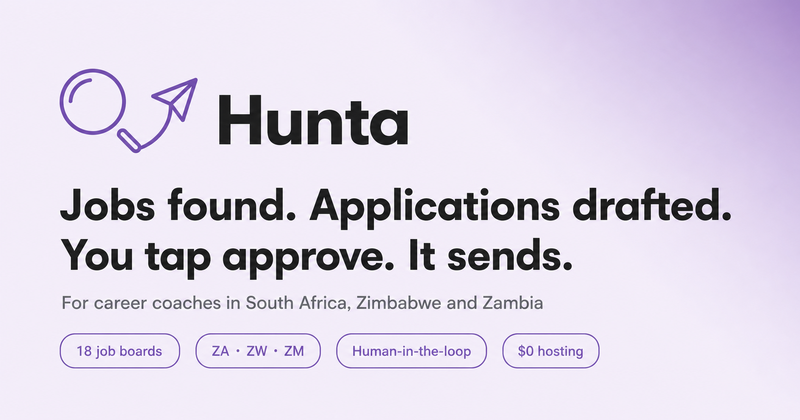
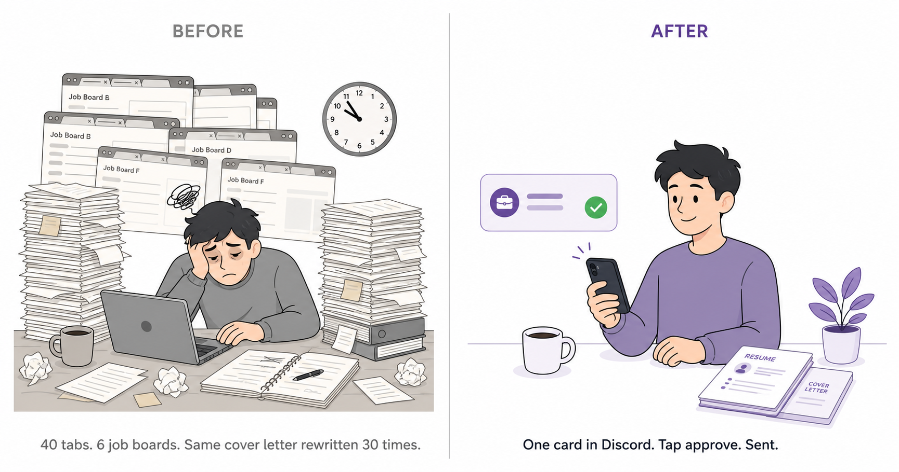
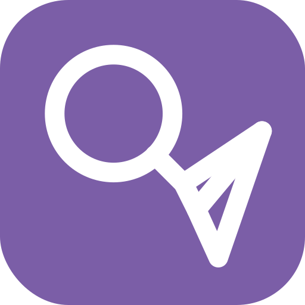
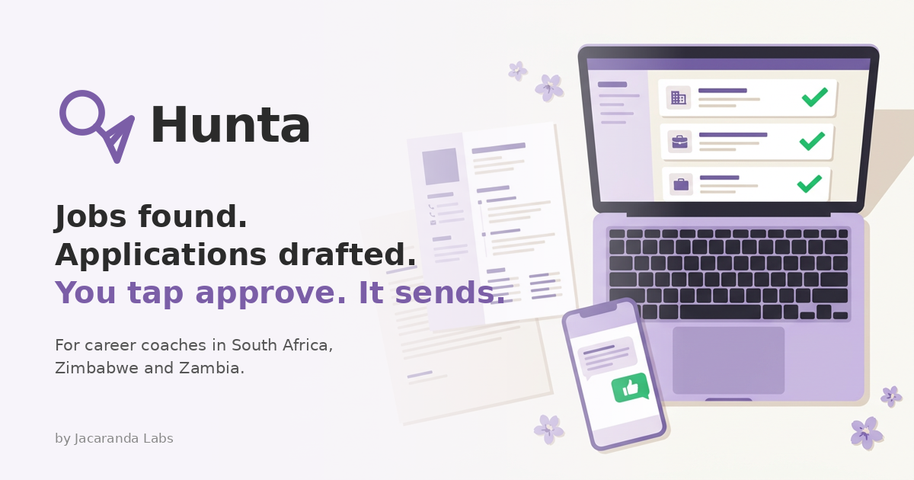

Jobs found. Applications drafted.
You tap approve. It sends.
Hunta is a human-in-the-loop job-hunting pipeline for career coaches in South Africa, Zimbabwe and Zambia. This hub keeps every marketing asset one click away — copy blocks have a Copy button.
11 returned live results on the last run
The 30-second pitch
Hunta is a job-hunting copilot for career coaches in South Africa, Zimbabwe and Zambia. It sweeps 18 job boards on a schedule — PNet, CareerJunction, JobMail, VacancyMail, iHarareJobs, GoZambiaJobs and more — matches every ad against your candidate's real profile, scores the fit, then drafts a tailored cover letter and a country-formatted CV as PDFs. The whole thing lands in your Discord as a single card with a ✅ and a ❌. Tap approve and it sends the application from the candidate's own Gmail. Nothing ever goes out without your tap.
One-liners
Hunta finds the jobs, drafts the application, and waits for your tap. You stay the professional in the loop; Hunta does the forty-tabs part.
Your candidates aren't losing to better candidates. They're losing to the 40 open tabs. Hunta hunts, drafts, and asks before it sends.
The card — the whole product
🔎 Hunta — new application ready Bookkeeper @ Elite Search & Selection Match 90% — SAIPA-registered, Sage Pastel and full-cycle bookkeeping match the core requirements. https://www.careerjunction.co.za/… Candidate thabo01 · ref 04aa74fbbd [✅ Approve & send] [❌ Reject] + 04aa74fbbd_cv.pdf + 04aa74fbbd_letter.pdf
Graphics



Cold outreach
Buyer = the coach. Full set in copy/cold-outreach.md.
Email 1 — first touch
Subject: the 40 open tabs
Hi {{first_name}},
I'll keep this short because your week looks like this: PNet, CareerJunction,
VacancyMail, iHarareJobs — read every ad, decide "is this Thabo?", rewrite the same
cover letter for the 30th time, attach, send, repeat.
That's the job nobody bills for.
I run a small tool called Hunta that does that part. It checks 18 job boards across
South Africa, Zimbabwe and Zambia on a schedule, matches every advert against each
candidate's real profile, scores the fit, and drafts a tailored cover letter + a
country-formatted CV as PDFs.
It lands in a private Discord channel as one card:
🔎 Bookkeeper @ Elite Search & Selection — Match 90%
[✅ Approve & send] [❌ Reject]
You tap. That's it. Nothing sends without you, nothing is invented, drafts
self-delete after 72 hours.
It's been running for a week with a real coaching practice: 41 drafted
applications across 3 candidates. Happy to show you the cards live.
20 minutes this week?
— {{your_name}}
P.S. It hosts on GitHub Actions for $0 — no server, no card. The demo includes the
boring "how much does this cost me" slide up front.Email 2 — day 3
Hi {{first_name}},
One honest follow-up: the thing coaches ask first is "does it auto-apply?" — no.
Every application is your tap on ✅. Hunta is a pipeline for your judgement,
not a replacement for it.
Still worth 20 minutes?
— {{your_name}}WhatsApp cold
Hi {{name}}, {{your_name}} here. I build tools for career coaches. Quick question:
how many hours a week do you spend rewriting the same cover letter across PNet /
CareerJunction / the ZW boards?
I've got a tool that does the hunt + draft and waits for your tap — nothing sends
without you. Ran 41 applications through it last week, all human-approved.
If that's your world, I'll send the 5-min demo. If not, sorry for the ping 🙏Candidate pilot recruit
FREE pilot for 5 job seekers
I'm testing Hunta — it hunts jobs for you across the big boards in
{{country}}, shortlists what actually matches your profile, and writes a
tailored letter + CV for each one. You approve every single application
from your phone before anything goes anywhere.
No CV upload to random websites. Your letter goes out from YOUR email.
Nothing is ever sent without your yes.
5 spots this month. Reply your name + field (e.g. "Thabo — accounting").LinkedIn DM
Hi {{name}} — saw your post on {{topic}}. I'm running a small experiment:
a pipeline that does the board-sweep + letter-drafting part of coaching and
leaves the approve-tap to the human. 41 applications through it last week,
zero auto-sends. If that intersects with your practice, I'll gladly show
you the 5-minute version. If not, carry on 🙂Lifecycle emails
Day 0 → 45, plus the candidate-facing mail. Full set in copy/email-sequences.md.
Day 0 — welcome + setup
Subject: Hunta is live for {{tenant}} — 3 clicks to first card
Hi {{name}},
Welcome. Your pipeline already has a home; it just needs three things from you:
1. DISCORD (2 min)
In your server: #hunta → Edit Channel → Integrations → Webhooks → New Webhook.
Paste the URL into your tenant config.
2. GMAIL APP PASSWORD (2 min)
Switch on 2-step verification, then myaccount.google.com/apppasswords →
create one → 16 characters. It lives encrypted; there is no Google Cloud
project and no OAuth anywhere.
3. YOUR FIRST CANDIDATE (5 min)
One YAML: name, country, location, keywords, exclusions. Copy the example —
"accountant / bookkeeper / Johannesburg" is a proven starter.
That's it. Hunts run 06:00 / 10:00 / 14:00 / 18:00 (SAST), Mon–Sat.
Your first card should land within a few hours.
— The Hunta deskDay 2 — expectations
Subject: what a good first 48 hours looks like
Hi {{name}},
Two days in, here's what "normal" looks like:
- A handful of cards, not hundreds. Hunta pre-scores every ad for free and only
spends AI attention on the shortlist. Quiet days are healthy days.
- Some cards you'll reject. That's the system learning your taste — rejections
cost nothing and delete their own PDFs.
- Your first "holy cow it named the company" moment, usually on card 2 or 3.
Tuning tip: exclusions beat keywords. "intern", "unpaid", "commission only"
remove more garbage than any keyword adds.
— The Hunta deskDay 7 — nudge
Subject: your week in cards
Hi {{name}},
Your numbers: {{cards}} cards, {{approved}} approved, {{rejected}} rejected.
One thing worth 5 minutes: open the rejected cards and check WHY they were
rejected. If the match reasons read wrong, tighten min_relevance or add an
exclusion — 5 minutes now saves a week of noise.
And if a candidate got an interview, I'd genuinely like to hear about it.
— The Hunta deskDay 29 — renewal courtesy
Subject: month 2 of Hunta for {{tenant}}
Hi {{name}},
Month two begins tomorrow — {{price}} renews via Whop, same as month one.
Your month: {{cards}} cards, {{sends}} sends, {{hours_saved}} coaching hours
back (cards × 25 min of manual hunt-and-rewrite, our honest yardstick).
Change plan, pause, or cancel from your Whop library — no email required,
no retention call. We'd rather you stay because the cards are good.
— The Hunta deskDay 45 — win-back
Subject: the boards kept running
Hi {{name}},
No pitch. One honest line: the boards didn't stop posting when you paused —
PNet and CareerJunction alone move ~70 finance ads a week in Gauteng.
If the reason you left was noise, the fix is exclusions (5 minutes).
If it was price, tell me the number that works and I'll see what I can do.
Either way, your candidate files were never held hostage — they're YAMLs,
and they're yours.
— {{your_name}}Demo & video scripts
The 5-minute demo is the whole sales motion. Full scripts in copy/demo-script.md.
The 5-minute demo — beats
0:00 THE PAIN "Show me your Tuesday. Six boards, forty tabs, the same
letter rewritten per candidate. That's the job nobody
bills for."
0:30 THE CARD Open Discord. Read it slowly: board + role, one-sentence
match reason, both PDFs, the two buttons.
2:00 THE TAP Approve one live → "sent from the candidate's own Gmail".
Reject one → "deleted on the spot; untouched cards
self-destruct at 72 h".
3:00 THE 3 FEARS 1. Does it auto-apply? No — every send is your tap.
2. Invent things? Can't — it only reuses the profile.
3. Spam? Own mailbox, 20/day cap, human-approved.
4:00 THE MONEY "$0 hosting — two GitHub Actions workflows."
Price. Close: "One candidate, one week, free. If the
first three cards aren't better than your current
Tuesday, walk away."45-second video — shot list
SHOT 1 0:00-0:08 Screen: 12 browser tabs, clock ticking.
CAPTION "Tuesday, 6 boards, 40 tabs."
SHOT 2 0:08-0:18 Discord: a card appears.
CAPTION "Hunta hunted so I didn't. One card. Match 90%."
SHOT 3 0:18-0:28 Open the letter PDF, scroll.
CAPTION "Letter + CV from the candidate's real profile. Nothing invented."
SHOT 4 0:28-0:36 Phone: tap ✅. Sent confirmation.
CAPTION "My tap. Their inbox. Sent from their own Gmail."
SHOT 5 0:36-0:45 Logo on lilac.
"Hunta. Jobs found. Applications drafted. You tap approve. It sends."15-minute deep dive — agenda
0-5 the 5-min demo
5-7 coverage matrix: ZA PNet·CareerJunction·JobMail·Careers24·Bizcommunity·LinkedIn·remote
ZW VacancyMail·iHarareJobs·JobsZimbabwe ZM GoZambiaJobs (+ remote Jobicy·Remotive)
7-9 economics: rules+pre-score throw out ~85% for free; ONE LLM call per shortlist job
9-11 data posture: {job_url,status,timestamp}; 72 h purge; YAML = right to erasure
11-13 billing rails: Whop · Lightning/coinos · Mukuru grant
13-15 hosted vs self-hosted (read-only on expiry, never bricked)Post-demo email
Great speaking, {{first_name}}.
What you saw, in one line: Hunta hunts 18 boards, drafts the letter + CV,
and waits for your tap.
Attached/below: the sample CV + letter, the guard-rails list, pricing.
The pilot stands: one candidate, one week, free. I'll set your webhook on
the call — onboarding is ~10 minutes.
— {{your_name}}FAQ & objections
Does it apply automatically?
No. Every application requires a human tap on ✅. Design guarantee — there is no "auto" mode. Hunta is a pipeline for your judgement.
Will the AI invent experience?
No. The writer prompt hard-forbids inventing qualifications, employers, dates or skills; it may only reorder and rephrase the profile. Check the sample CV against the sample letter.
Will my Gmail get flagged as spam?
Sends go from the candidate's own mailbox, to real ads, human-approved, capped at 20/candidate/day. The opposite of spray-and-pray.
What happens to the data?
The store keeps only {job_url, status, timestamp}. PDFs die on send/reject;
untouched drafts self-delete at 72 h. Deleting the candidate YAML is the right to erasure.
Does it need my LinkedIn?
No login, no profile scraping. Public job search only.
Which boards?
18 integrations: PNet, CareerJunction, JobMail, Careers24, Bizcommunity, VacancyMail, iHarareJobs, JobsZimbabwe, GoZambiaJobs, LinkedIn jobs search, Jobicy, Remotive, UNjobs, Impactpool. CVs render ZA / ZW / ZM conventions.
What does it cost to run?
$0 default: two GitHub Actions workflows on a private repo. Customer brings a free-tier LLM key and a Gmail app password — no Google Cloud project, no OAuth, no card.
"AI cover letters are generic."
Show the sample. Second paragraph names the company and mirrors two real requirements; every fact traces to the CV. Generic is what they wrote at 11pm — same letter, thirty employers.
"Mass applications get people blacklisted."
Agree, then contrast: 20/day cap, human approval on every send, candidate's own address, relevance threshold. "This isn't volume; it's coverage. Every send is still a decision."
"We already use an ATS / agency."
An ATS is for employers; an agency is for sourcing. You're on the candidate's side — Hunta is the candidate-side desk.
"Why not just use ChatGPT?"
You can — and then also maintain the sweepers, scoring, three countries of PDF templates, expiry logic, approval channel and the 4am cron. Hunta is the difference between a prompt and a pipeline.
Pricing
No public number is baked into the product yet — the frames below are ready to take your prices. Anchors: one agency placement fee ≈ a year of Hunta; a coach bills ~R600–R1500 per CV-and-letter bundle Hunta produces in minutes.
Solo
1 coach · 3 candidates · hosted
R [your price] / month
Whop subscription · Lightning for ZW/ZM
Studio
1 coach · 15 candidates · hosted
R [your price] / month
+ white-label PDFs with your brand
Sovereign
agency / career centre · own box
R [your price] / month
licence-checked, read-only on expiry, data never leaves
Money one-liners
• No server, no card: it runs on GitHub Actions' free tier — ~100 minutes a month. • The customer brings a free-tier LLM key and their own Gmail; your margin is the coaching. • Pay how you already pay: Whop (card/PayPal/crypto), Lightning via coinos, or Mukuru. • Pilots free while HUNTA_FREE_MODE is on — say "free week", not "free product".
Brand
Palette
Logos


Voice — do / don't
DO lead with the card (the product) and the tap (the trust) DO show the 72 h purge and the 20/day cap unprompted — they answer the two fears DO southern-African specifics: SAIPA, SARS eFiling, VAT201, NRC, EcoCash DON'T "revolutionise", "game-changer", "AI-powered future", "guaranteed interviews" DON'T call it a "bot" with buyers — "pipeline" / "copilot" DON'T screenshot a real candidate — the demo persona only
Sample outputs
Rendered by the real engine (same templates, same letter text as a live production application). Demo persona: Thabo Nkosi — the fictional example profile shipped in the repo. PDFs: sample-cv-za.pdf · sample-cover-letter.pdf
Thabo Nkosi
Personal Details
| ID Number | 9001015800085 |
|---|---|
| EE Status | African Male |
| Driver's Licence | Code B |
| Languages | English, isiZulu, Sesotho |
Profile
SAIPA-registered accountant with six years' experience across full-cycle bookkeeping, month-end close and statutory submissions for SMEs and logistics groups.
Key Skills
Sage Pastel · Sage 300 People · Xero · VAT201 & EMP201 · Month-end close · Management accounts · Payroll (140 staff) · Excel (advanced) · CaseWare
Experience
Accountant — Mzansi Logistics (Pty) Ltd 2021-02 – Present
• Own month-end close for 3 entities; reduced close from 12 to 6 working days
• Prepare VAT201, EMP201 and annual financial statements
• Manage payroll for 140 staff on Sage 300 People
Junior Accountant — KPL Auditors 2018-01 – 2021-01
• Bookkeeping to trial balance for 25 SME clients
• Assisted with SARS audits and objections
Education
BCom Accounting, University of Johannesburg — 2017
Thabo Nkosi
The Hiring Manager
Elite Search & Selection
Re: Bookkeeper
Dear Hiring Manager,
I am excited to apply for the Bookkeeper role at Elite Search & Selection. The hybrid setup and focus on a small, dynamic finance team align perfectly with my career goals and work style.
With six years of SAIPA-registered accounting experience, I have managed full-cycle bookkeeping for multiple entities, performed month-end close, and prepared VAT201 and EMP201 submissions via SARS eFiling. My daily use of Sage Pastel and payroll processing on Sage platforms directly matches the core requirements of this position.
I am confident that my strong Excel skills, attention to detail, and ability to juggle priorities independently will add immediate value to your team. I look forward to contributing to Elite Search & Selection's continued growth.
Kind regards,
Thabo Nkosi
Launch checklist
- Numbers refreshed from the latest hunt log (Actions → hunt → run log)
- Price decided and typed into the Pricing section + email 29
- Discord webhook live for the demo tenant (GET webhook → 200, name "hunta")
- og-image.png attached to every social post (brand/og-image.png)
- One CTA only — a reply keyword or a link, never both
- Read the "Don't say" list in the Brand tab
- LinkedIn launch post + X thread on the same morning; WhatsApp broadcast same day
- Demo slot links ready: "reply HUNTA" → calendar
- Pilot terms written down: 1 candidate, 1 week, free; then price in the open
Publish this hub
GitHub → this repo → Settings → Pages Source: Deploy from a branch → main → / (root) → Save → https://<you>.github.io/hunta-marketing/ (live in ~1 minute) Or locally, right now: open index.html
Social copy
Paste-ready. Every figure is live data; swap in fresh numbers before posting. Full set also in
copy/social.md.LinkedIn — launch post
LinkedIn — short version
X — launch thread (1/8 shown; full thread in copy/social.md)
X — single post
Facebook — community group
WhatsApp — broadcast
Hashtags